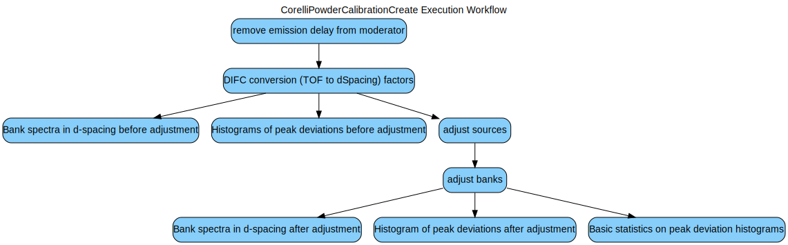

\(\renewcommand\AA{\unicode{x212B}}\)
CorelliPowderCalibrationCreate v1¶
{kind=link}
CorelliPowderCalibrationCreate dialog.¶
Summary¶
Adjust bank positions and orientations to optimize peak determination in d-spacing
See Also¶
Properties¶
Name |
Direction |
Type |
Default |
Description |
|---|---|---|---|---|
InputWorkspace |
Input |
Mandatory |
Powder event data, ideally from a highly symmetric space group |
|
OutputWorkspacesPrefix |
Input |
string |
pdcal_ |
Prefix to be added to output workspaces |
TofBinning |
Input |
dbl list |
Mandatory |
Min, Step, and Max of time-of-flight bins. Logarithmic binning is used if Step is negative. |
PeakFunction |
Input |
string |
Gaussian |
Allowed values: [‘BackToBackExponential’, ‘Gaussian’, ‘Lorentzian’, ‘PseudoVoigt’, ‘IkedaCarpenterPV’] |
PeakPositions |
Input |
dbl list |
Mandatory |
Comma delimited d-space positions of reference peaks. |
FixSource |
Input |
boolean |
True |
Fix source’s distance from the sample |
SourceToSampleDistance |
Input |
number |
20.004 |
Set this value for a fixed distance from source to sample, in meters |
AdjustSource |
Input |
boolean |
False |
Adjust Z-coordinate of the source |
SourceMaxTranslation |
Input |
number |
0.1 |
Maximum adjustment of source position along the beam (Z) axis (m) |
FixY |
Input |
boolean |
True |
Vertical bank position is left unchanged |
ComponentList |
Input |
str list |
bank1/sixteenpack,bank2/sixteenpack,bank3/sixteenpack,bank4/sixteenpack,bank5/sixteenpack,bank6/sixteenpack,bank7/sixteenpack,bank8/sixteenpack,bank9/sixteenpack,bank10/sixteenpack,bank11/sixteenpack,bank12/sixteenpack,bank13/sixteenpack,bank14/sixteenpack,bank15/sixteenpack,bank16/sixteenpack,bank17/sixteenpack,bank18/sixteenpack,bank19/sixteenpack,bank20/sixteenpack,bank21/sixteenpack,bank22/sixteenpack,bank23/sixteenpack,bank24/sixteenpack,bank25/sixteenpack,bank26/sixteenpack,bank27/sixteenpack,bank28/sixteenpack,bank29/sixteenpack,bank30/sixteenpack,bank31/sixteenpack,bank32/sixteenpack,bank33/sixteenpack,bank34/sixteenpack,bank35/sixteenpack,bank36/sixteenpack,bank37/sixteenpack,bank38/sixteenpack,bank39/sixteenpack,bank40/sixteenpack,bank41/sixteenpack,bank42/sixteenpack,bank43/sixteenpack,bank44/sixteenpack,bank45/sixteenpack,bank46/sixteenpack,bank47/sixteenpack,bank48/sixteenpack,bank49/sixteenpack,bank50/sixteenpack,bank51/sixteenpack,bank52/sixteenpack,bank53/sixteenpack,bank54/sixteenpack,bank55/sixteenpack,bank56/sixteenpack,bank57/sixteenpack,bank58/sixteenpack,bank59/sixteenpack,bank60/sixteenpack,bank61/sixteenpack,bank62/sixteenpack,bank63/sixteenpack,bank64/sixteenpack,bank65/sixteenpack,bank66/sixteenpack,bank67/sixteenpack,bank68/sixteenpack,bank69/sixteenpack,bank70/sixteenpack,bank71/sixteenpack,bank72/sixteenpack,bank73/sixteenpack,bank74/sixteenpack,bank75/sixteenpack,bank76/sixteenpack,bank77/sixteenpack,bank78/sixteenpack,bank79/sixteenpack,bank80/sixteenpack,bank81/sixteenpack,bank82/sixteenpack,bank83/sixteenpack,bank84/sixteenpack,bank85/sixteenpack,bank86/sixteenpack,bank87/sixteenpack,bank88/sixteenpack,bank89/sixteenpack,bank90/sixteenpack,bank91/sixteenpack |
Comma separated list on banks to refine |
ComponentMaxTranslation |
Input |
number |
0.02 |
Maximum translation of each component along either of the X, Y, Z axes (m) |
FixYaw |
Input |
boolean |
True |
Prevent rotations around the axis normal to the bank |
ComponentMaxRotation |
Input |
number |
3 |
Maximum rotation of each component along either of the X, Y, Z axes (deg) |
Minimizer |
Input |
string |
L-BFGS-B |
Minimizer to use, differential_evolution is more accurate and slower. Allowed values: [‘L-BFGS-B’, ‘differential_evolution’] |
MaxIterations |
Input |
number |
20 |
Maximum number of iterations for minimizer differential_evolution |
Description¶
Standard powder samples with Bragg scattering diffraction rings of accurately known lattice spacings can be used to adjust the position and/or orientation for the components of an instrument (moderator and detector bank) such that the observed peak intensities yield lattice plane spacings as close as possible to the standard reference values.
This algorithm adjusts the position of the moderator as well as the position and orientation of each bank of detector pixels. The goal of these adjustments is to produce neutron paths and scattering angles that lead to optimal comparison between observed and reference lattice plane spacings
It is recommended not to adjust the position of the moderator, but only that of the banks. By setting all calibrations at a fixed source-to-sample distance, calibrations taken at different times and with different samples can be combined. the default value (SourceSampleDistance=20.004) is the result of adjusting the position of the moderator with three different samples (Si, LaB6, and CsLaNb2O7).
The execution workflow is as follows:
Usage¶
For best results, a tube calibration should be applied to the input event workspace, before attempting to adjust the position and orientation of each bank.
Example - adjust banks 42 and 87
from mantid.simpleapi import *
from corelli.calibration import load_calibration_set, apply_calibration
#
# Loading the runs for the standard powder sample
LoadNexus(Filename='/tmp/CORELLI_124036_banks42_87.nxs', OutputWorkspace='LaB6')
#
# Apply the tube calibration
table, mask = load_calibration_set(input_workspace, '/SNS/CORELLI/shared/tube_calibration/', 'table', 'mask')
apply_calibration('LaB6', table)
#
# Adjust the position of the moderator. Adjust the position and orentation of banks 42 and 87
CorelliPowderCalibrationCreate(InputWorkspace='LaB6',
OutputWorkspacesPrefix='LaB6_',
TubeDatabaseDir='/tmp',
TofBinning=[3000,-0.001,16660],
PeakFunction='Gaussian',
PeakPositions=[1.3143, 1.3854,1.6967, 1.8587, 2.0781, 2.3995, 2.9388, 4.1561],
SourceMaxTranslation=0.1,
ComponentList='bank42/sixteenpack,bank87/sixteenpack',
ComponentMaxTranslation=0.02,
ComponentMaxRotation=3.0)
A set of output workspaces are created, including the adjustment diagnostic workspaces.

All workspaces are prefixed by LaB6_, which is the value we set for option OutputWorkspacesPrefix when we
invoked the algorithm. A description of the output workspaces follows:
Workspace LaB6_adjustments is the main result, a table containing adjustments for different instrument components.
In our example, we have adjusted the moderator and banks 42 and 87.
ComponentName |
Xposition |
Yposition |
Zposition |
XdirectionCosine |
YdirectionCosine |
ZdirectionCosine |
RotationAngle |
|---|---|---|---|---|---|---|---|
moderator |
0.0 |
0.0 |
-19.9944 |
0.0 |
0.0 |
0.0 |
0.0 |
bank42/sixteenpack |
2.5941 |
0.0625 |
0.0870 |
0.0009 |
-0.9997 |
0.0210 |
92.3187 |
Xposition,Yposition,Zposition: coordinates for the center ofComponentNamein the lab’s frame of reference. Units are in Angstroms.XdirectionCosine,YdirectionCosine,ZdirectionCosine: direction cosines in the lab’s frame of reference. They define a rotation axis to set the orientation ofComponentName.RotationAngle: rotate this many degrees around the previous rotation axis to set the orientation ofComponentName.
While LaB6_adjustments contains absolute position and orientation values, table LaB6_displacements lists
changes in position and orientation for each Bank, as follows:
DeltaR: change in distance from Component to Sample (in mili-meter)
DeltaX: change in X-coordinate of Component (in mili-meter)
DeltaY: change in Y-coordinate of Component (in mili-meter)
DeltaZ: change in Z-coordinate of Component (in mili-meter)
DeltaAlpha: change in rotation around the Y-axis (in degrees)
DeltaBeta: change in rotation around the X-axis (in degrees)
DeltaGamma: change in rotation around the Z-axis (in degrees)
Option FixY=True will result in DeltaY=0 for all banks. Similarly, option FixYaw=True will result in DeltaGamma=0 for all banks.
The diagnostics workspaces are stored within WorkspaceGroup LaB6_bank_adjustment_diagnostics. These are:
LaB6_PDCalibration_peaks_originalandLaB6_PDCalibration_peaks_adjustmentscontains one fitted-intensity spectrum per bank versusd-spacingbefore and after the banks are adjusted.

As one can see, intensity is displayed only in the neighborhood of those values of d-spacing where peaks are found. In addition, we don’t show the raw intensity, but we substitute each raw peak with a Gaussian fit of the peak. This substitution takes place on every pixel of the bank. Later, we add up all these fitted-intensity peaks for all pixels within one bank.
LaB6_peak_deviations_originalandLaB6_peak_deviations_adjustmentfinds for each peak the difference between the peak center and the reference d-spacing value we know from the standard. These peak center deviations are collected for all peaks found in the pixels of the bank, and then histogrammed.

Adjusting the bank removes any observed systemic deviation, thus centering the histogram around the no-deviation value. The FHWM of these histograms is only modestly reduced, indicating that the remaining observed deviations are not due to misalignment in the position and orientation of the bank.
LaB6_percent_peak_deviations_originalandLaB6_percent_peak_deviations_adjustmenthistograms the unitless peak center deviations, this achieved dividing each deviation by its reference d-spacing, i.e. \(\frac{d_{observed} - d_{reference}}{d_{reference}}\). This largely eliminates the scaling of the peak center deviation with the value of the peak center.

Adjusting the bank removes the previously observed systemic deviation and modestly reduces the FWHM of the histogram.
LaB6_percent_peak_deviations_summarypresents basics statistics for the histograms ofLaB6_percent_peak_deviations_originalandLaB6_percent_peak_deviations_adjustment, namely the average and FWHM of each histogram, as well as the average of the absolute value of the deviations.

From the picture, peaks in bank87 deviated from their reference value between \(mean - FWHM \simeq -1\%\) and \(mean + FWHM \simeq +4.5\%\) before adjustment. After adjustment the peaks deviated between \(-2\%\) and \(+2\%\)
Categories: AlgorithmIndex | Diffraction\Reduction